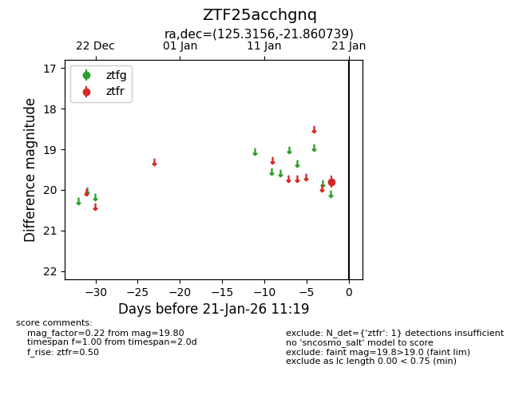
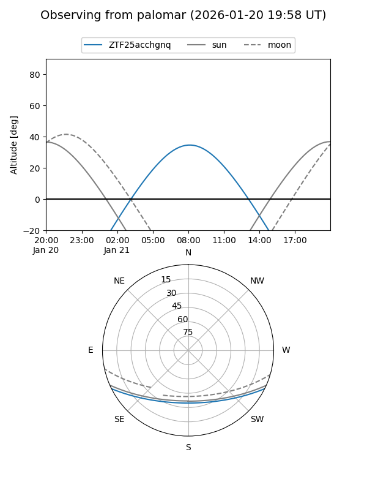

ZTF25acchgnq
Target ZTF25acchgnq at 2026-01-21 11:21
Aliases and brokers:
FINK: link
Lasair: link
ALeRCE: link
alt names
ZTF25acchgnq (ztf,fink_ztf)
Coordinates:
equatorial (ra, dec) = 125.3156,-21.86074
equatorial (HMS+DMS) = 08:21:15.74,-21:51:38.66
galactic (l, b) = (242.8234,+8.37906)
Flags:
Photometry:
last ztfr=19.80
1 ztfr detections
Lightcurve

Visibility


Additional plots